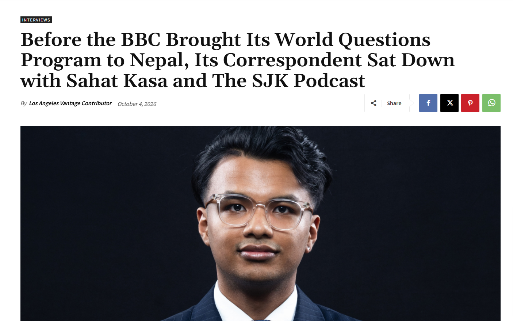

International coverage
Before BBC World Questions Nepal
Ahead of BBC World Questions Nepal, Sahat Kasa sat down with BBC correspondent Jonny Dymond on The SJK Podcast. Their conversation explored why Nepal matters in global discussions, its changing politics and the voices shaping its future. The interview was also the subject of an article published by Los Angeles Vantage.